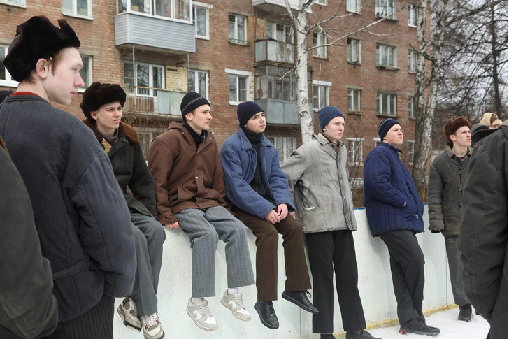

Добро пожаловать в город Казань!
Добро пожаловать в Казань – город, где каждый камушек имеет свою историю, а каждая улица – свой веселый фольклорный рассказ! Этот оазис на Волге сочетает в себе величие культурного наследия и живописные пейзажи с духом юмора и гостеприимством его жителей. Здесь даже самый серьезный горожанин находит повод для улыбки – будь то встреча с забавным символом города – котом-путешественником, или прогулка по улицам, которые словно зовут насладиться жизнью во всех ее проявлениях. В Казани каждый день – праздник, а каждый уголок – повод для веселья и открытий!
"А теперь запомни: ты теперь пацан, ты теперь с улицей, а кругом враги."
Интересные факты о сериале "Слово Пацана":
|
Изначально создатели сериала планировали провести съемки в 2022 году в Казани. Там даже успел пройти кастинг актеров. Однако местные общественники этому воспротивились и подали иски в ГК с требованием заблокировать показ картины. В итоге продюсеры решили снять сериал в Ярославле, где были подобраны локации, похожие на улицы, дворы и здания Казани. В Ярославле съемки проходили с марта по апрель 2023 года. |
 |
|
Для съемок масштабных сцен, например очереди за водкой, продюсерам пришлось устраивать большой кастинг, так как в массовке приняли участие около 500 человек. Главным требованием было отсутствие современных примет у участников: модных татуировок, татуажа, необычных причесок, наращенных волос, ресниц и ногтей. Все актеры массовки должны были прийти на съемки в валенках, шапках-ушанках, пуховых платках и прочей соответствующей той эпохе одежде нейтральных серых или темных цветов. |
 |
|
Актера на главную роль Андрея по кличке «Пальто» продюсеры нашли за месяц до старта съемок. Им стал 15-летний Леон Кемстач, отчим которого — знаменитый актер Антон Богданов из проекта «Реальные пацаны». Леон в совершенстве знает французский и английский языки, занимается спортом, танцами и является победителем различных олимпиад. Для него это была первая крупная работа в кино. |
 |